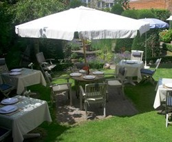

Marino Raffaele
Al sinds 1985 kookt Marino Frans, met wat elk seizoen brengt. Kreeft en zalm doet hij op een handvol manieren, vis komt met de saus die erbij hoort, en de eend van Challans is zijn specialiteit.
- Lid van de Orde der 33 Meesterkoks van België
- Compagnon de la Toque Blanche, bij de Patrons Cuisiniers
- Ridder in de erewacht van de stad Keulen
- Specialist van de eend op de manier van de Tour d'Argent in Parijs
À la carte
Vegetariërs, veganisten, lactosevrij of glutenvrij: je bent welkom. Zeg het bij het reserveren.
La carte
Voorgerechten
- Pastei van ganzenlever met oude port
- Gemarineerde zeebaars
- Roerei op drie manieren
- Warme salade van langoustines en kalfszwezerik
- Gepocheerde mousse van snoekbaars met kreeftensaus
- Mousseline van omble chevalier met champagne
- Gegratineerde Zeeuwse oesters met champagne
- Warme salade van kreeft
Kreeft
- Gegrilde kreeft met botersaus en verse pasta
- Versneden kreeft op een bedje van groenten
- Heldere kreeftensoep met verse kruiden
- Gebakken kreeft met currysaus
- Stoofpotje van kreeft
Zalm
- Schotse zalm, in huis gerookt
- Tartaar van zalm
- Gestoomde zalmfilet met zuring
- Gebakken zalm met bordelaisesaus
- Tournedos van zalm met gestoomde groenten
- Salade van rauwe zalm
- Zalm en asperges met witte botersaus
- Soufflé van zalm
- Zalmfilet in korstdeeg uit de oven
Vis
- Gepocheerde zeebaars met kreeftensaus
- Tarbot met Gentse mosterd
- Tarbot in een net met verse tuinkruiden
- Rolletjes van tong met kreeftensaus
- Rogfilet met kappertjes
- Gegrilde Sint-Pietersvis met sauce choron
- Zeeduivel met ratatouille
- Zeeduivel op gestoofde groenten
- Gegrilde zeeduivel met witloof en truffelolie
Vlees
- Kalfszwezerik met kreeft
- Krokant gebraden lamsschenkel met verse kruiden
- Lamsschenkel zoals de chef hem maakt
- Ossenhaas met bordelaisesaus
- Kalfsniertjes met bruin bier
- Kalfszwezerik met fijne groenten
- Eendenborst van Challans met een boeket groenten
Eend van Challans zie verder
- Mazarine, met sinaasappel
- Volgens het seizoen
- Met gember
- Claude Foussier, met gekaramelliseerde appel
- Marco Polo, met drie pepers
- Daniel Sickles, met pistache en appel
Prijzen in euro, btw inbegrepen. [Prijzen per gerecht invullen]
Wil je weten welke allergenen in een gerecht zitten? Vraag het ons, we zeggen het je per gerecht.
Eend van Challans
Challans, in de Vendée, is in Frankrijk beroemd om zijn eenden. Marino bereidt ze op de manier van La Tour d'Argent in Parijs, het huis waar eend al meer dan honderd jaar het paradepaardje is.
- Mazarinemet sinaasappel
- Claude Foussiermet gekaramelliseerde appel
- Marco Polomet een saus van drie pepers
- Daniel Sicklesmet pistache en appel
- Met gembervoor wie het wat pittiger wil
- Volgens het seizoenvraag wat er nu op de kaart staat
Een herenhuis uit 1926
Bijna veertig jaar ontvingen we onze gasten in dit art-nouveauhuis aan de Koning Albertlaan, met glasramen in de winterserre en een tuin achteraan. [Foto's en beschrijving van de nieuwe plek invullen]



Feesten en meer
Recepties en familiefeesten
Een tête-à-tête, een familiefeest, een receptie of een zakendiner. Vertel ons wat je wil vieren en met hoeveel je bent, dan stellen we samen een menu op.
Traiteur
Liever thuis eten? Onze traiteurdienst werkt het hele jaar door, ook tijdens de feestdagen.
Een pianist aan de vleugel
Huispianist Jan Huylebroeck speelt op afspraak aan de vleugelpiano. Boek hem via info@livepiano.be of livepiano.be.
De wijnkelder
In de kelder liggen vooral Bordeaux en Bourgogne. Bij elk menu kan je kiezen voor aangepaste wijnen.
Reserveren
We ontvangen je enkel op afspraak. Bel of mail, dan spreken we een dag en uur af en geven we je het adres.
Je betaalt met Visa, Mastercard of American Express.
Adres: [nieuw adres invullen]
Parking: [parkeerinfo invullen]